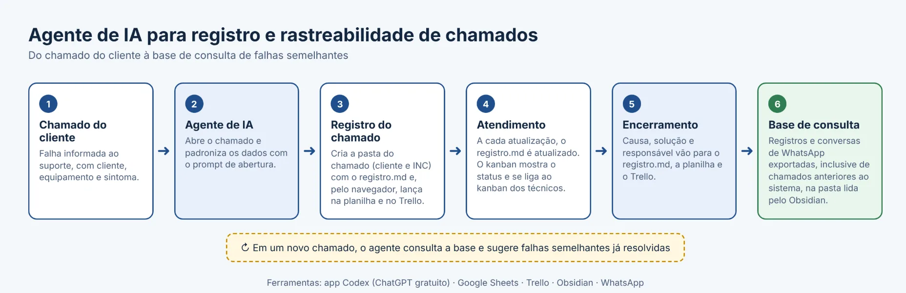
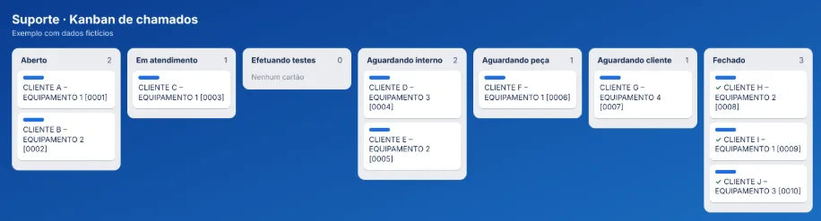
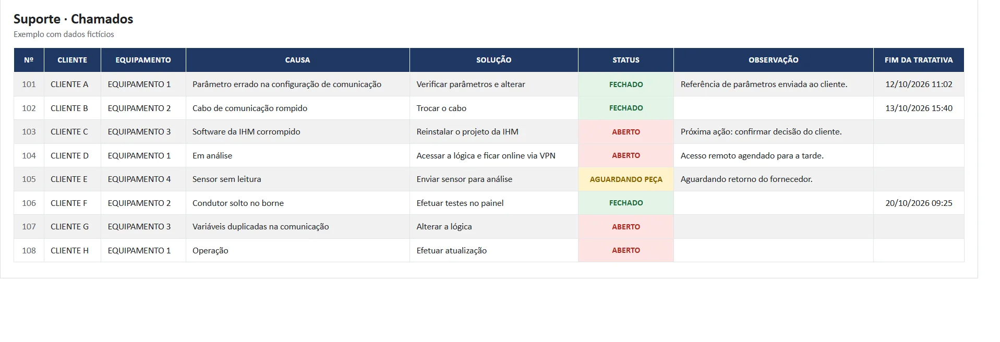
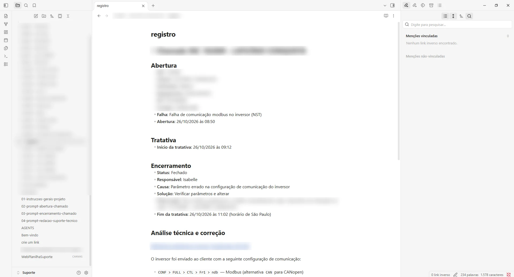

Projeto no trabalho
Agente de IA para registro e rastreabilidade de chamados de suporte

O problema
Na Tridium não existe uma equipe de suporte dedicada: os técnicos atendem os chamados junto com as demais atividades. Com isso, o registro variava de pessoa para pessoa e era difícil lembrar de falhas parecidas que já tinham acontecido.
O que eu criei
Criei um agente de IA que, a cada chamado novo, abre uma pasta com o nome do cliente e o número do INC e cria nela um arquivo registro.md. O agente atualiza esse arquivo a cada andamento e, no encerramento, registra causa, solução e responsável. Ao mesmo tempo, lança os dados na planilha de suporte e no Trello, sempre no mesmo formato. Como a empresa só disponibiliza o ChatGPT na versão gratuita, sem integração direta com essas ferramentas, o agente controla o navegador para preencher os dois.
Quando o chamado fecha, também exporto a conversa de WhatsApp com o cliente e guardo na base. Alimentei essa base com conversas de chamados anteriores ao sistema, para que o agente consiga consultar o histórico. O app Codex e o Obsidian apontam para a mesma pasta local, então tudo vira uma base de consulta para encontrar falhas semelhantes.
Também montei um kanban de chamados com colunas de status (Aberto, Em atendimento, Efetuando testes, Aguardando interno, peça ou cliente, e Fechado), ligado ao kanban de atividades dos técnicos.
Exemplo de uso
Em um chamado de falha de comunicação Modbus em um inversor de frequência, o agente sugeriu chamados anteriores com falhas em inversores. Na base havia um documento de referência com os parâmetros de configuração desse mesmo equipamento. Pedi ao cliente que comparasse os parâmetros com essa referência, ele encontrou valores diferentes, corrigiu e o chamado foi encerrado. A causa e a solução ficaram registradas para consultas futuras.
Situação atual
O suporte tem quase 200 chamados no histórico. Desses, cerca de 20 já passaram pelo novo fluxo, e o restante entra na base pelas conversas e registros anteriores.
Imagens



Projeto desenvolvido por mim no meu trabalho, com dados da empresa omitidos.